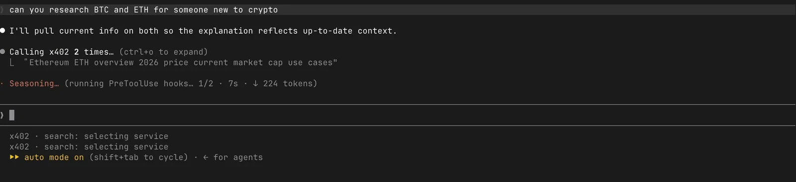
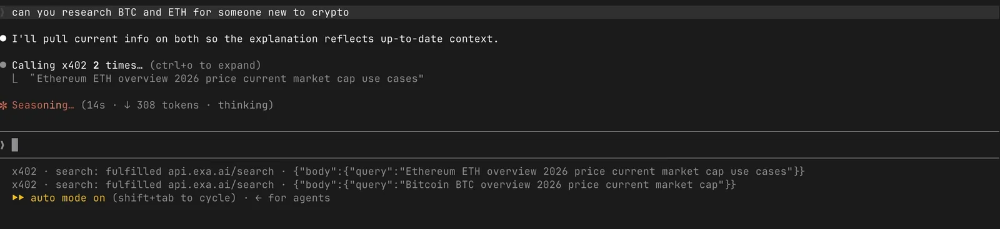

このUIがしていること
選択は、エージェントの作業の途中で、利用者の操作なしに行われる。利用者に見えるのは、端末の下端の経過の行である。
- 経過の行が、選んでいる、呼んでいる、済んだ、の3段階を言葉で示す。どの呼び出し先が選ばれたかは、アドレスとして読める。
- 要求の本文が同じ行に出るので、何を問い合わせたかを後から追える。
- 画面には「auto mode on」と出ており、エージェントは確認なしで進む設定になっている。x402は呼び出しごとに支払いが生じる仕組みだが、いくらまで使ってよいか、支払いの前に承認があるか、呼び出しごとの金額がどこに出るかは、動画からは分からない。お金が動く選択を、確認なしの流れに置いている点が、この事例の主な論点である。
- 選ばれた呼び出し先が合わなかったときの、代わりの経路や、取り消しの手段も、示されていない。
キャプチャ
{kind=link}

（原寸の画像を開く）{kind=link}

（原寸の画像を開く）見る箇所依頼文「can you research BTC and ETH for someone new to crypto」、「Calling x402 2 times…」、下端の「x402 · search: selecting service」（1枚目）と「x402 · search: fulfilled api.exa.ai/search · …」（2枚目）、「auto mode on」
入力から画面の変化まで
-
判断への入力
エージェントがx402のツールに渡す要求。画面では、検索の問い（例：「Ethereum ETH overview 2026 price current market cap use cases」）が2件、並行して出ている。作者の説明では、あらかじめ選ばれた呼び出し先の一覧が、候補になる。
-
Jevの判断
作者の説明では、要求に合う呼び出し先をJevが選ぶ。画面の表示は「selecting service」だけで、候補、確率、Jevの表記は出ていない。
-
結果がUIをどう変えるか
下端の行が、「selecting service」から、「calling api.exa.ai/search」、「fulfilled api.exa.ai/search」へと変わる。要求の本文（JSON）も同じ行に出る。その後、エージェントが結果を使って説明を書く。動画の後半では、別のアドレス（ページの取得）も呼び出し先として出てくる。
- 判断型の見立て
- 不明出典から判断できない
- 作者は呼び出し先をJevが選ぶと述べるが、画面に出るのは「selecting service」の経過だけで、質問型もJevの表記も出ていない。
Jevとの適合
要求を、限られた呼び出し先の1つに素早く当てはめる判断は、エージェントの作業を待たせない点でJevに合う。ただし、この動画では、Jevの出力が画面に出ておらず、どこまでがJevの判断かは作者の説明に頼っている。支払いを伴う選択では、速さより先に、範囲と承認の設計が要る。
確認範囲と未確認事項
根拠は限定的で、調査監査の評価はB（追加の確認が要る段階）。作者による投稿動画から静止画を確認。動画は端末の録画だけで、ソースは公開されていない。画面に出るのは「selecting service」という経過の表示と、呼び出し先のアドレスで、Jevの表記、候補の一覧、確率は出ていない。選択にJevを使うというのは作者の説明である。支払いの範囲、利用者の承認、取り消し、代わりの経路は、動画では確かめられない。
- 確認済み動画から得た2枚の静止画に見える端末の表示（依頼文、「Calling x402 2 times…」、経過の行の変化、呼び出し先のアドレスと要求の本文、「auto mode on」）
- 未検証Jevへの入力と出力、呼び出し先の候補と確率、支払いの金額と範囲、利用者の承認、取り消しと代わりの経路、合わない呼び出し先が選ばれたときの扱い、ソースコード
- 推定扱い質問型は不明として扱う。候補から1つを選ぶ判断のように見えるが、画面に質問型もJevの表記も出ていない
- 引用動画から必要な範囲の静止画を切り出して引用（端末の上端の表示を除いた）。権利は作者に帰属する